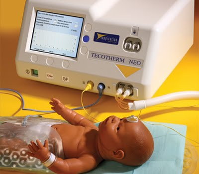

Hipotermia Terapéutica

Es la reducción de la temperatura corporal alrededor de 3 centígrados para preservar el metabolismo cerebral, disminuir la lesión de tejido cerebral y mejorar la función neurológica.
Criterios de inclusión
RN mayor o igual a 35 semanas de gestación con peso mayor a 1800gramos, que cumpla con criterios clínicos y bioquímicos, además de un examen neurológico alterado.
Criterios clínicos y bioquímicos:
- Apgar menor o igual a 5 a los 10 min de nacido.
- Necesidad de reanimación, incluyendo ventilación con presión positiva con TET o mascar y bolsa a los 10 min de nacido.
- Acidosis dentro de la primera hora de nacido de una muestra umbilical, venosa, arterial o capilar.
- Déficit de base >16mEq/L en la primera hora de vida
Criterios de examen neurológico alterado:
- Encefalopatía moderada o severa
- Alteraciones en 3 de las 6 categorías del examen neurológico segúnSarnat y Sarnat...
Criterios de exclusión
- RN menor a 35 semanas de edad gestacional y Menor de 1800g de peso al nacer.
- Evidencia significativa de trauma craneoencefálico, fractura de cráneo o hemorragia intracraneana.
- Anomalía cromosómica. Presencia de anomalía congénita mayor
- Coagulopatía severa con sangrado activo pese a la administración de plaquetas y crioprecipitado.
- Shock séptico refractario.
- RN en condición muy grave.
Inicio, monitoreo y mantenimiento de la hipotermia
- Examinar y anotar en el expediente el examen neurológico de ingreso y su cambio mínimo cada 24 horas.
- Admitir al paciente sobre un colchón térmico, previamente enfriado.
- Se recomienda un ambiente silencioso, con manipulacion mínima.
- El personal recomendado para recibir al paciente son 2 enfermeras, 2 médicos y el terapista respiratorio. Aborda primero la estabilización respiratoria y hemodinámica del paciente, luego cuidados de enfermería, toma de muestras sanguíneas, colocación del acceso venoso, colocación de monitoreo de función cerebral, entre otros según necesidad.
- Previo al ingreso del neonato, el colchón debe ser enfriado en modo manual a 33.0°C. Cuando el paciente ingresa colocarlo en modo “Auto”.
- El objetivo es mantener la temperatura central entre 33°C y 33.5°C.
- Es fundamental el inicio de la terapia en las primeras seis horas de vida.
- El inicio de la hipotermia es un proceso rápido, pero en caso de requerir un FiO2 mayor al 50% y de observarse un aumento mayor del 30% en la cantidad de oxígeno suplementario se recomienda realizar el enfriamiento de forma más lenta.
Recalentamiento
- Al completar mínimo 72 horas de hipotermia, se iniciará el calentamiento del paciente. Este proceso debe tener una duración entre 6 a 12 horas.
- Previo al recalentamiento verifique niveles normales de calcio, potasio y glucosa.
- Aumente la temperatura de ajuste (Set point) en 0.2 °C cada 30 minutos, hasta que la temperatura deseada sea alcanzada, aumentar 0.1 °C cada 15 minutos en caso de labilidad del paciente al cambio de temperatura.
- Se debe recalentar a una velocidad no mayor de 0.5 °C por hora, hasta llegar a 36,5 °C.
- Valorar que la temperatura central del paciente no se eleve más de 0.5 °C por hora.
- Cuando se alcance la temperatura de 36,5 °C, encender la incubadora en modo servocontrol a 36 °C, manteniendo el colchón de hipotermia.
- Posteriormente se retira el equipo de hipotermia y se mantiene con el control de temperatura de la incubadora.
- Valorar la temperatura del usuario mínimo 4 horas posterior al recalentamiento. Importante evitar la hipertermia.